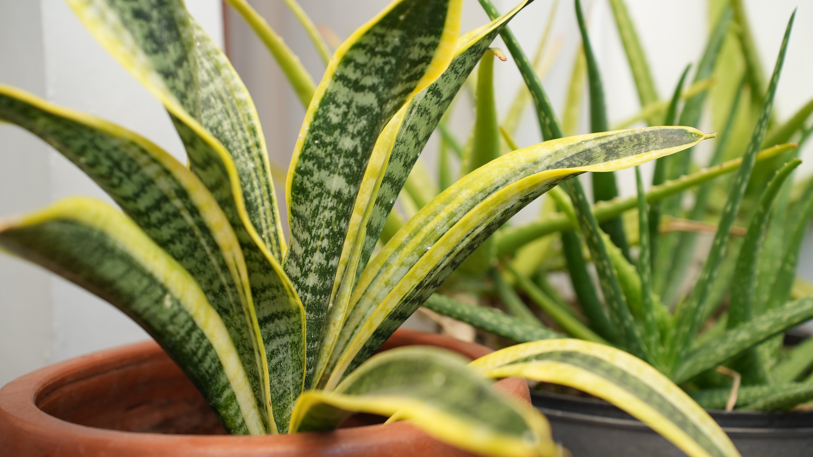

Snake Plants prefer bright, indirect light but can tolerate low light conditions. They can also withstand direct sunlight, although too much can cause leaf burn.
Allow the soil to dry out completely between waterings. Water thoroughly, then let the pot drain to prevent root rot. Snake Plants are drought-tolerant and can go for weeks without water, especially in cooler temperatures.
Use a well-draining potting mix, such as cactus or succulent soil. Adding perlite or sand to standard potting soil can improve drainage and prevent water retention.
Snake Plants thrive in temperatures between 70°F to 90°F (21°C to 32°C). They can tolerate lower temperatures but should be protected from frost. Average household humidity is sufficient for these plants.
Snake Plant, also known as Sansevieria or Mother-in-Law's Tongue, is a hardy and versatile houseplant appreciated for its easy care and striking appearance. With around 70 species, Snake Plants display a variety of leaf shapes, sizes, and colors, making them popular in both home and office settings.
Feed Snake Plants with a balanced, liquid fertilizer diluted to half strength during the growing season (spring and summer). Fertilize once a month and reduce feeding in the fall and winter.
Remove any dead or damaged leaves by cutting them at the base. Repot Snake Plants every 2-3 years to refresh the soil and accommodate growth. Clean the leaves occasionally to remove dust and enhance their appearance.
Snake Plants are known for their long, stiff, upright leaves, which can be dark green, variegated with yellow or white edges, or patterned with horizontal stripes. The leaves grow in a rosette pattern and can range in height from a few inches to several feet, depending on the species.
Snake Plant, Viper's Bowstring Hemp, Saint George's Sword
Order: Asparagales | Family: Asparagaceae | Genus: Sansevieria
1. Sansevieria trifasciata (Mother-in-Law's Tongue):
- Features tall, dark green leaves with light green horizontal stripes.
- Ideal for low to bright indirect light and infrequent watering.
2. Sansevieria trifasciata 'Laurentii':
- Known for its yellow-edged, variegated leaves.
- Thrives in a variety of light conditions and requires minimal care.
3. Sansevieria cylindrica (Cylindrical Snake Plant):
- Displays round, pointed leaves that can be braided for an ornamental effect.
- Prefers bright, indirect light and occasional watering.
4. Sansevieria trifasciata 'Moonshine':
- Characterized by its silvery-green, almost white leaves.
- Grows well in indirect light and tolerates low light conditions.
5. Sansevieria 'Black Gold':
- Features dark green leaves with striking golden edges.
- Suitable for low light and easy to maintain.
6. Sansevieria masoniana (Whale Fin):
- Notable for its large, paddle-shaped leaves with unique mottling.
- Requires bright, indirect light and infrequent watering.
7. Sansevieria kirkii (Star Sansevieria):
- Has wavy, pointed leaves with an intricate pattern.
- Grows best in bright, indirect light and well-draining soil.
8. Sansevieria 'Golden Hahnii':
- Dwarf variety with rosette-forming, yellow-edged leaves.
- Ideal for small spaces and low light conditions.
9. Sansevieria bacularis:
- Displays thin, cylindrical leaves that grow upright.
- Prefers indirect light and requires minimal watering.
10. Sansevieria ehrenbergii (Blue Sansevieria):
- Features blue-green, sword-like leaves.
- Thrives in bright light and well-draining soil.
11. Sansevieria patens:
- Recognized by its thick, arching leaves with dark green bands.
- Requires bright, indirect light and occasional watering.
12. Sansevieria 'Silver Queen':
- Has silvery-green leaves with a subtle sheen.
- Suitable for a variety of light conditions and easy to care for.